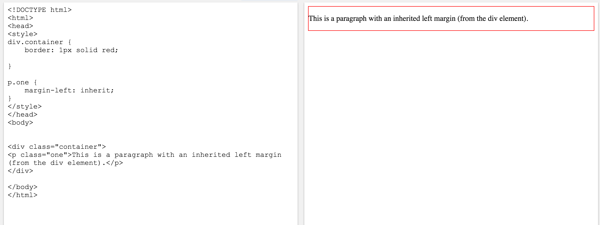
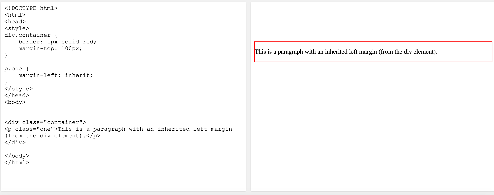
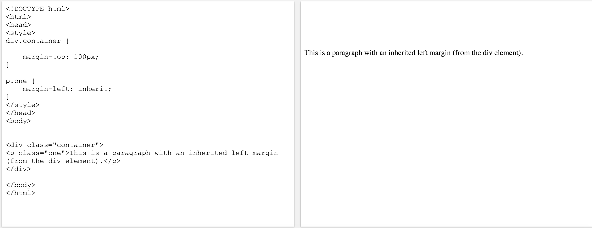

This week we learned all about CSS and it’s relationship with HTML. CSS stands for Cascade Style Sheets and it describes how HTML elements are to be displayed on the page. There are many properties that can help position elements on a page and the three ones I used a lot are Margin, Border, and Padding. Here's a brief description of what each one is:
Margin is the space outside and around the elements. When altered, it effects how far the element is away from other elements.
Border is just the edge of an element. Can create an outline of the element with a border. It can be a full outline, just the right side, top, left, or bottom.
Padding is the spacing between the content and the border. When altered, it effects how far the element’s content is from the border.
Margin
The Margin property is used when we need to move an element away from another element. This could be moved in any direction, right, left, up, and down. In the below example I show how to move the div element using margin-top. In the first picture there is no margin set. Then in the second picture, I set the margin-top to 100px. This moves the div down the page 100px from the nearest element, which in this case is the body.


Borders
Next is the Border property. This is used when we need an outline of the edges of an element. This helps us visually see the dimensions of an element. Like the margin this too can be added on the right, left, top, bottom or all around. In the pictures below, I show the effects of adding a border. In the first pic the div has no border. In the second pic a gave it a red border that is 1px thick and is solid.

Padding
The Padding is the space between the content and the border. I would use this property if I were trying to increase the space in a visible box. This too can be changed from the top, bottom, right or left. Below, I give an example of the effects of the padding. In the first picture there is no padding added to the div. Then in the second pic I add padding to the top. As you can see this moves the content in the box down 100px from the top border.